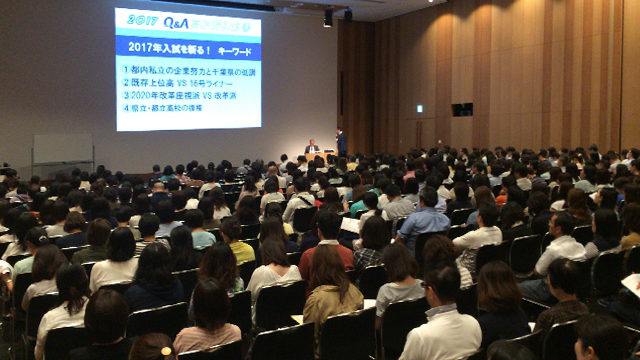

皆さんお久しぶりです。教育研究所ARCSの庄本です。
この1ヶ月、忙しさにかまけてブログの原稿が滞り、気がつけば大分ごぶさただったように思います。やはり継続は力なりですね。
私の近況ですが、先週土曜日、学習塾クセジュ主催のイベント『高校解体新書』に、所長の管野とともに出席してきました。この『高校解体新書』ですが、2時間半にわたって首都圏の高校に関するあれやこれやを一気にお話しするという情報盛りだくさんの会です。当日は400名近くの保護者様にご参加いただき、壇上からの眺めはある種壮観でした。そんな大舞台で私と管野はメインプレゼンターとして時間いっぱい出ずっぱり、一秒たりとも黙ることなくひたすらお話ししてきましたが、私などはしゃべりすぎて、会場で用意されていた水を開始30分で飲み干すほど。緊張感に満ちながらも楽しい時間を過ごせました。
我々は仕事として高校へのコンサルティングをやっていることもあり、塾などが持つ「学校外」からの情報だけではなく、新鮮な「学校内の情報」を結構持っています。そのすべてを一般の方々の前でお話しすることもできず、難しい言い回し、歯切れの悪い言い方をせざるを得ない場合も多々ありましたが（もちろん、ライブだからこそ言える“ギリギリ”の発言もありました）、今後もできる限り「ギリギリ」のところを攻めていきますのでご期待くださいね。
さて、『高校解体新書！』でもお話ししたとおり、近年、特に首都圏では「高校入試」が再び存在感を増してきているように感じます。一昔前は、「できる子は中学から中高一貫私立」というのが当たり前で、高校入試をすること自体がある種“マイナー”な行動であるかのように思われていました。しかし、特に都立高校の人気過熱と復権を皮切りに、旧来の「日比谷高校」→「東大」のような公立エリートコースが脚光を浴び、成績最上位層の生徒たち（とその親）も高校入試を視野に入れるようになりました。実際に小学生の保護者の方とお話ししていても、高校入試を“中学入試をさせられないからしょうがなく”というネガティブな意識ではなく、むしろ“中途半端な私立中に行かせるならクオリティの高い公立高校、あるいは付属中を持たない私立に通わせる方がよい”とポジティブに考える方が多くなっています。テレビや雑誌でも盛んに「名門公立高校」の特集が組まれていることからも分かるように、社会全体がこれまでの行き過ぎた私立偏重から公立再評価への揺り返しを起こしているのです。
このような状況では、これまでよりもますます「クオリティの高い高校」はどこか、そして高校の「クオリティ」とはなにかという、高校の情報が重要になります。この二つの問いを並べて見ると、一見前者が重要に思えますが、本当に大切なのは実は後者でしょう。というのも、“何についての”クオリティなのかをしっかり把握しておかないと、前者の高校を決めることができないからです。例えば、“受験指導についての”クオリティなのか、“授業外アクティビティについての”クオリティなのか。受験指導を重視する家庭の生徒にとっては“授業外アクティビティのクオリティが高い”高校は、満足いく進学先ではないかもしれませんし、その逆も然りです。つまり、「よい高校」を選ぶということは、家庭の教育方針や子どもの将来像を見直すことそのものであると言えます。
人格形成がほぼ終わった段階で入学する大学とは異なり、高校はまさに人格形成の真っ最中を過ごす場所です。必然的に高校生活が生徒に与える影響は非常に大きくなり、誇張なく人生を左右します。だからこそ、高校入試に備えて悔いのない選択をしてもらえるよう、その手助けをできれば幸いです。
教育研究所ARCSでは9月以降いくつかのイベントで、「高校の真の姿」をあぶり出すいくつかのイベントを企画しています。是非ご参加ください！